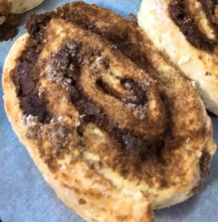

Instructions
C'est parti pour la pâte !
- Commencez par faire fondre le beurre.
- Chauffez le lait à température ambiante. Si vous êtes un certain QL, vous pouvez remplacer le lait par
du rhum, de la bière, ou tout autre alcool de votre choix. Pour tout autre cas de figure, mieux vaut laisser vos boissons
enivrantes à leur place ; la pâte risquerait de ne pas lever.
- Ajoutez-y la lévure. Mélangez pour bien la dissoudre.
- Incorporez les sucres, la cardamome et l'oeuf.
- Ajoutez le sel. Si vous avez tendance à rager lorsque vous perdez une partie de LoL ou d'Among Us, merci
de multiplier la quantité indiquée par 37. Si non, soyez raisonnables.
- Versez petit à petit la farine tout en mélangeant. Une fois les 2/3 ajoutés, mettez-y le beurre fondu, puis
incorporez la farine restante.
- Pétrissez bien la pâte pendant au moins 10 minutes.
- Couvrez le bol avec du film ou un torchon et laissez monter pendant une heure.
- La pâte est prête !
Allez, on passe à la garniture.
- Il faut que le beurre ait passé suffisamment de temps à température ambiante pour avoir eu le temps de
ramollir. Mélangez-y alors la vergeoise (ou la cassonade) et la cannelle.
- Etalez la pâte avec un rouleau de sorte à former un carré (ou du moins quelque chose qui y ressemble). N'oubliez pas de mettre un peu de farine sur votre surface de travail ainsi que sur la
pâte pour éviter que ça colle car sinon votre moment pâtisserie va mal tourner et vous risquez alors de voir un Philippe
Etchebest coléreux débarquer dans votre cuisine.
- Roulez la pâte, puis découpez le rouleau ainsi formé en alternant les coupes obliques à gauche et à droite.
Je sais que vous n'avez rien compris à ce que je viens de dire, et c'est pour cela que vous trouverez
ci-dessous un schéma illustrant le découpage à faire.
- Une fois le découpage effectué, retournez les roulés de sorte à ce que le côté le plus étroit soit vers le haut.
- Préchauffez le four à 200°C.
- Laissez les roulés lever 20 minutes.
- Pour la dorure, battez l'oeuf et enduisez en les roulés.
- Aspergez encore de sucre grains.
- Enfournez pendant 12-15 minutes en fonction de la taille de vos roulés.
- Ça y est, c'est prêt !
Si tout s'est bien passé, le résultat devrait être plus ou moins semblable à ce que vous voyez sur l'image en
haut de page. Toutefois, lorsque vous en faites pour la première fois, il est tout à fait possible que vos
roulés ressemblent plutôt à ça :

Le cas échéant, il ne vous restera plus qu'à vous dire que vous ferez mieux la prochaine fois 😛